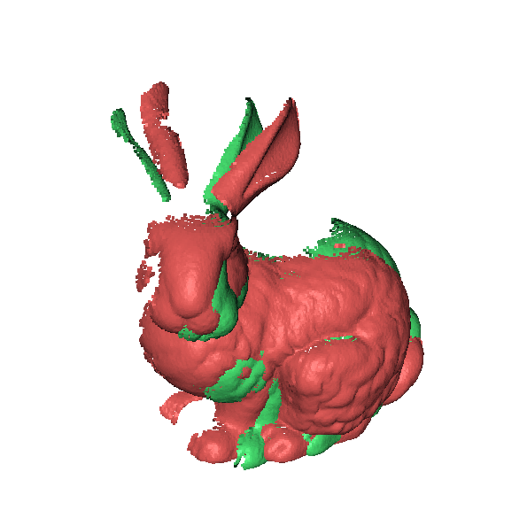
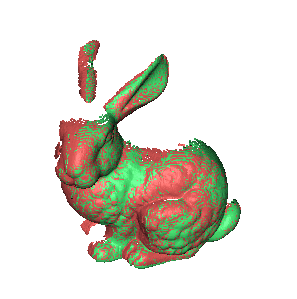
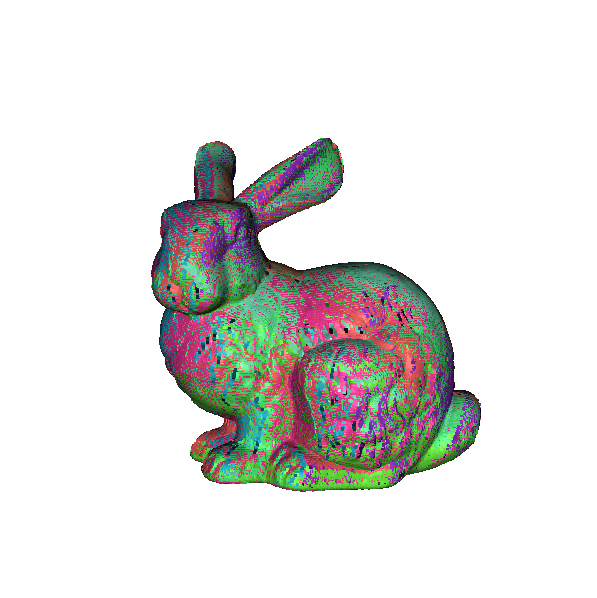
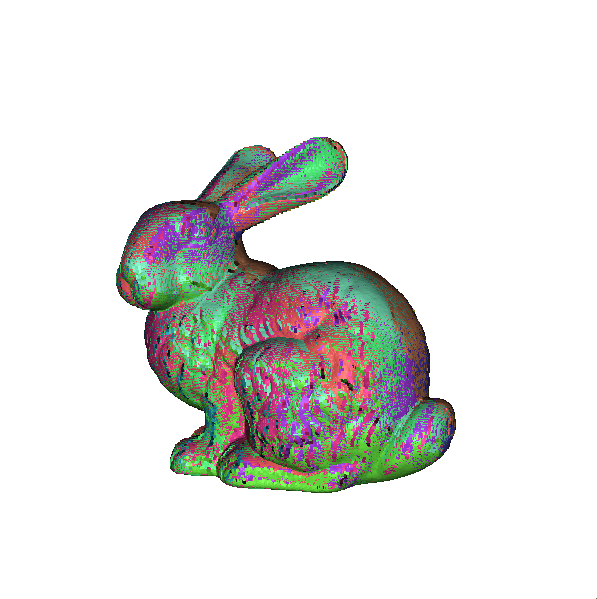
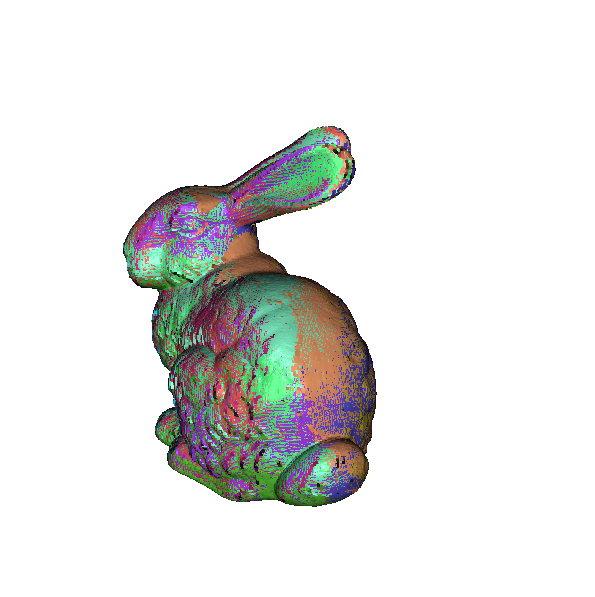
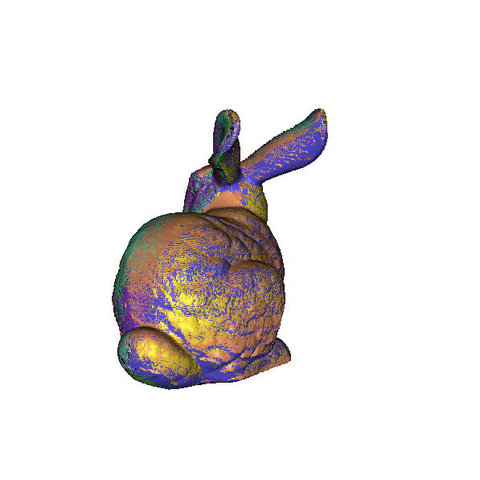
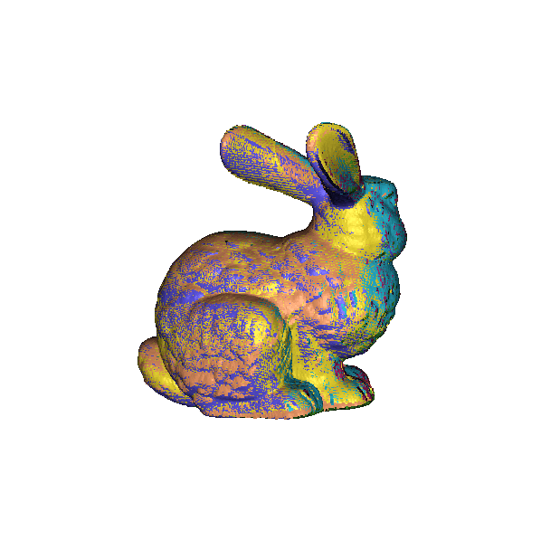
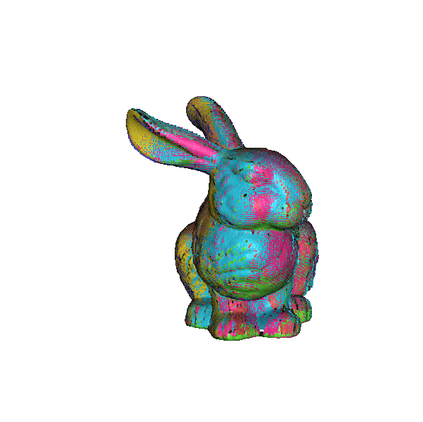
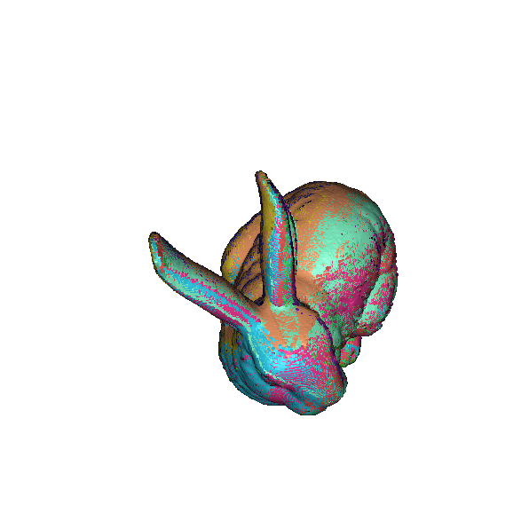
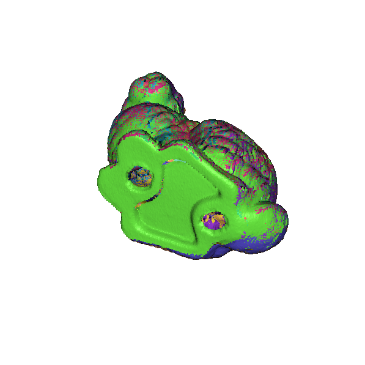

COS 526 Assignment 2Point Cloud Registration
Kara Bressler (karab)
This project is written in Python 3 running in a Jupyter Notebook. Assuming previous installation of Anaconda, a user simply needs to run the Jupyter Notebook "526_a2.ipynb" by typing 'jupyter notebook' in the command line in the corresponding directory. Running the notebook will then run all of the cells of the notebook sequentially. The notebook should be run 9 times in total, changing the variable with the file names in order to align all the relevant transformation matrices. Run notebook with the following file names in order (file1Name, file2Name respectively):User provided input should be made in the first cell of the notebook under the comment "USER INPUT."
Implementation
Before the solution, we see meshes misaligned as so:

and after alignment of two meshes, we see:

Below we see the final implemenatation with all the point cloud samples lined up!






And from the top and the bottom:


{kind=link}
{kind=link}
{kind=link}
{kind=link}
{kind=link}
{kind=link}
{kind=link}
{kind=link}
{kind=link}
{kind=link}
Resources
Here's a list of the resources consulted and used to make this program:
- NumPy Documentation
- File Handling Cheat Sheet for Python
- COS 426 notes concerning transformations in homogeneous coordinates
- COS 226 notes concerning kd-trees
- SciPy's KDTree class
- StackOverflow concerning implementing SciPy's KDTree class
- Stanford CS 248 notes concerning inverse matrices
- COS 426 notes concerning (slightly wrong) basic translation and rotation matrices on slides 56, 57